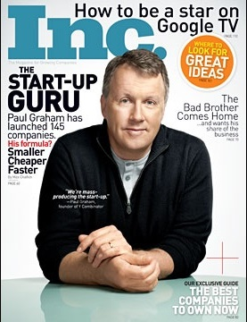

Inc. Magazine Response

August 2013
Recently Inc. published an interview in which I said we'd noticed a correlation between founders having very strong foreign accents and their companies doing badly. Some interpreted this statement as xenophobic, or even racist—as if I'd said that having a foreign accent at all was a problem. But that's not what I said, or what I think. No one in Silicon Valley would think that. A lot of the most successful founders here speak with accents.
The case I was talking about is when founders have accents so strong that people can't understand what they're saying. I.e. the problem is not the cultural signal accents send, but the practical difficulty of getting a startup off the ground when people can't understand you.
I'd already explained that when I talked about this issue with a New York Times reporter:
But after ranking every Y.C. company by its valuation, Graham discovered a more significant correlation. "You have to go far down the list to find a C.E.O. with a strong foreign accent," Graham told me. "Alarmingly far down—like 100th place." I asked him to clarify. "You can sound like you're from Russia," he said, in the voice of an evil Soviet henchman. "It's just fine, as long as everyone can understand you."Everyone got that? We all agree accents are fine? The problem is when people can't understand you.
We have a lot of empirical evidence that there's a threshold beyond which the difficulty of understanding the CEO harms a company's prospects. And while we don't know exactly how, I'm pretty sure the problem is not merely that investors have trouble understanding the company's Demo Day presentation. Demo Day presentations are only 2 minutes and 30 seconds. With a presentation that short, you can just memorize it at the level of individual phonemes. Most batches we have groups that do this.
Conversations are more of a problem, as I know from my own experience doing office hours. We talk about a lot of subtle points at office hours. (Even talking on the phone rather than in person introduces a significant degradation. That's why we insist the groups we fund move to Silicon Valley for the duration of YC.) And I know I don't get as deeply into things with the groups that don't speak English well. I can feel it happening; we just can't communicate well enough. And often when I feel it happening, I warn the founders, because most of the people they encounter are not going to work as hard to understand them as I do.
Communication
A startup founder is always selling. Not just literally to customers, but to current and potential employees, partners, investors, and the press as well. Since the best startup ideas are by their nature perilously close to bad ideas, there is little room for misunderstanding. And yet a lot of the people you encounter as a founder will initially be indifferent, if not skeptical. They don't know yet that you're going to be huge. You're just one person they're meeting that day. They're not going to work to understand you. So you can't make it be work to understand you.I'd thought of just letting this controversy blow over. But then I remembered why I said what I said in the interview in the first place: to help founders. (I said so in the interview, though that got cut from the published version.) There's an important message here that I want to get through to founders, and the danger of people misrepresenting what I said is not just that founders get the parody version, but that the original message is lost.
I was talking a few years ago to a woman from some sort of entrepreneurship program in Central Europe. She asked me what they could do to prepare people to apply to Y Combinator. I think she was hoping I would tell her how she could teach them about startups, but as I've written elsewhere, the way to learn about startups is to start one. I told her the most important thing she could do was to make sure they spoke English well. I don't mind people beating on me so long as I can get that message through to founders who want to come to Silicon Valley from other countries. It's fine to have an accent, but you must be able to make yourself understood.
Back to top
Thanks to Sam Altman, Kevin Hale, Carolynn Levy, Jessica Livingston, Geoff Ralston, and Garry Tan for reading drafts of this.
Back to top